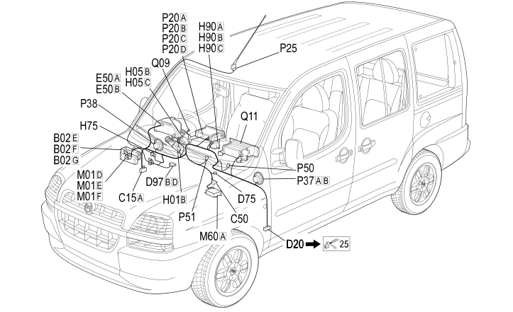

20 DASHBOARD
- Path
- Electrical equipment > 2 WIRING > 20 DASHBOARD
- Kind
- wiring harness
- Applies to
- engines: 1.2 8v, 1.6 16v, 1.9 JTD 8V, 1.9 DIESEL; production: da 12/03; only with equipment: Right hand drive and BIPOWER
- Interactive page
- https://sloeber94.github.io/elrnDB-fDbl/en/#/223003622
Applies to: engines: 1.2 8v, 1.6 16v, 1.9 JTD 8V, 1.9 DIESEL; production: da 12/03; only with equipment: Right hand drive and BIPOWER
